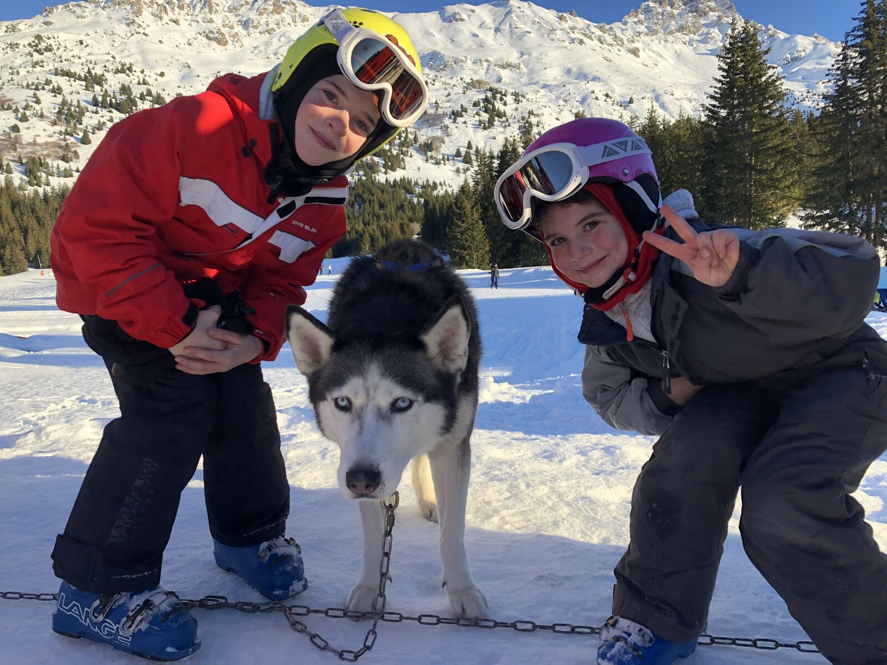

Chien de traîneau aux Carroz d'Arâches : où en faire et comment réserver

Il y a des activités qui marquent une semaine de vacances plus que n'importe quelle descente. Le chien de traîneau en fait partie : le silence de l'attelage lancé sur la neige, les huskys qui tirent en meute, les enfants suspendus au regard bleu des chiens. Aux Carroz d'Arâches, plusieurs mushers professionnels proposent l'expérience tout l'hiver — et les créneaux, peu nombreux, partent vite. Autant s'y prendre dès maintenant, avant l'ouverture du domaine le 12 décembre 2026.
Où en faire aux Carroz
La plupart des sorties partent du secteur des Molliets, à quelques minutes de la station, sur un plateau enneigé idéal pour la conduite d'attelage. Trois prestataires reconnus s'y relaient selon les saisons :
- Huskydalen — les mushers Christophe et Elisabeth Guillaud-Brèches, installés entre Les Carroz, Flaine et Chamonix, proposent l'initiation à la conduite après un briefing de 10 à 15 minutes, puis la prise en main de l'attelage. C'est l'adresse la plus citée par l'office de tourisme des Carroz.
- Evasion Nordique 74 — le musher Philippe Van Compernolle fait conduire chaque participant derrière un attelage de trois ou quatre huskys de Sibérie, sur les sites des Carroz et de Flaine. Visite du chenil possible pour comprendre la vie de la meute.
- Antarctic Road — des balades au départ du chalet des Molliets, aux Carroz, menées par le musher Luc Saillard, avec des créneaux au coucher du soleil et une pause possible dans un restaurant d'altitude.
Baptême ou vraie conduite ?
Deux formats coexistent, et mieux vaut choisir avant de réserver. Le baptême passager installe petits et grands dans le traîneau, emmitouflés, pendant que le musher conduit : c'est l'idéal avec de jeunes enfants, et souvent le plus court. L'initiation à la conduite, elle, vous met aux commandes du traîneau après un briefing — on apprend à freiner, à gérer la meute et à accompagner l'attelage dans les montées. Comptez alors une petite heure entre le harnachement, les consignes et la balade.
Côté budget, prévoyez un ordre de grandeur de 200 à 220 € pour une famille (deux adultes et deux enfants) sur une initiation, moins pour un simple baptême. Les tarifs exacts, l'âge minimum et les points de rendez-vous varient d'un prestataire à l'autre : ils sont indiqués sur leurs sites, et l'office de tourisme des Carroz centralise aussi les réservations au 04 50 90 00 04.
Nos conseils pour que ça se passe bien
- Réservez tôt. Les meutes sont petites et les créneaux limités : en vacances scolaires, visez plusieurs jours à l'avance, voire avant votre arrivée.
- Habillez chaud. On reste souvent immobile pendant les explications : gants, bonnet, chaussures étanches et une couche de plus qu'à ski.
- Visez le matin ou la fin d'après-midi. Les chiens courent mieux quand il fait frais, et la lumière rasante est superbe pour les photos.
- Respectez les chiens. Ce sont des athlètes : on les approche calmement, on suit les consignes du musher, on ne les nourrit pas.
Depuis le Lodge
Le secteur des Molliets est à quelques minutes en voiture du Lodge, et le parking privé couvert vous évite de déneiger au retour. Après une matinée dehors dans le froid, le bain nordique de la terrasse prend tout son sens. Notre conciergerie Clémentine peut vous aider à caler le créneau qui convient à vos enfants et à le coordonner avec vos journées de ski.
Envie de séjourner au Lodge ?
Appartement 4★ pour 6 personnes, 3 chambres, terrasse de 45 m² et bain nordique, au centre des Carroz d'Arâches.
Voir les disponibilités